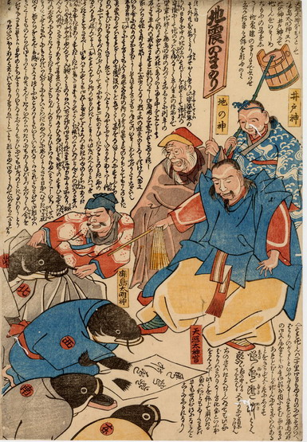

鹿島大明神に率いられた4体の鯰が、天照大神・地の神・井戸神に手形を押して詫びを入れている。鯰たちは皆、着物を身にまとっており、紋にはそれぞれ東西南北の一字が入っている。袖から覗く腕はひれである。
出典：親書誌：U426_nichibunken_0190：地震のまもり；ジシンノマモリ／日付：2010／資源識別子：U426_nichibunken_0190_0001_0000
Copyright (c)2010- International Research Center for Japanese Studies, Kyoto, Japan. All rights reserved.